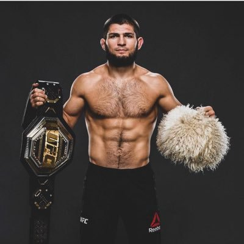

achtergrond
khabib, volledige naam Chabib Abdoelmanapovitsj Noermagomedov, is geboren in de Dagestaanse Autonome Socialistische Sovjetrepubliek in de voorloper van rusland, Sovjet-Unie. hij is soennitisch moslim, hij is er trots op en laat dat ook vaak weten tijdens zijn persconferenties en vooraf zijn wedstrijden. hij begon in zijn vroege jeugd met worstelen, onder begeleiding van zijn vader, Abdoelmanap Noermagomedov. er is een aparte pagina over zijn vader/trainer.
debuut
Noermagomedov maakte op 13 september 2008 zijn professionele MMA-debuut. Hij won die dag in 2 minuut 20 van Vusal Bayramov via een triangle choke. Hij won zestien partijen op rij, waarna hij een contract tekende bij de UFC. Ook in de UFC bleef Noermagomedov zijn reeks aan overwinningen voortzetten. Zijn UFC-debuut was op 12 januari 2012 tegen Kamal Shalorus. Hij versloeg hem via een verwurging in de derde ronde. Daarop versloeg hij achterelkaar Gleison Tibau, Thiago Tavares, Abel Trujillo, Pat Healy en Rafael dos Anjos. Nadat hij Dos Anjos versloeg en Gilbert Melendez de strijd om de titel verloren had, werd Noermagomedov in december 2014 door de media gekozen als de nummer één uitdager in de lichtgewichtdivisie, achter toenmalig kampioen Anthony Pettis. maar omdat hij in die periode een blessure had, werd de eerstvolgende titelstrijd aan Dos Anjos gegeven. Noermagomedov kwam na zijn overwinning op Dos Anjos in april 2014 twee jaar niet aan vechten toe vanwege verschillende blessures.
titelgevecht
Hij keerde uiteindelijk in april 2016 terug in het strijdperk. Hij zou het die dag opnemen tegen Tony Ferguson, de toenmalige nummer #4 bij de uitdagers in het lichtgewicht. Noermagomedov stond op dat moment zelf op #2. Ferguson trok zich negen dagen voor het gevecht alleen geblesseerd terug. Daarop kreeg Darrell Horcher de kans zijn debuut in de UFC te maken als vervangende tegenstander. De scheidsrechter stopte het gevecht na 3.36 minuten in de tweede ronde in het voordeel van Noermagomedov. Hij boekte op 12 november 2016 ook zijn 24e profzege op rij. Ditmaal dwong hij #6 van de uitdagerslijst Michael Johnson tot opgeven met een armklem in de derde ronde van hun partij. De UFC plande in maart 2017 voor de derde keer een gevecht tussen Noermagomedov en Ferguson, ditmaal om de interim-titel in het lichtgewicht. Voor de derde keer ging de partij niet door. Nadat hij zelf al een keer geblesseerd afzegde in december 2015 en Ferguson dat vier maanden later deed met longklachten, trok Noermagomedov zich deze keer terug omdat zijn pogingen om op het goede gewicht te komen hem in het ziekenhuis deden belanden. Noermagomedov keerde in december 2017 terug met een overwinning op Edson Barboza. Alle drie de juryleden kenden hem in alle drie de ronden van hun gevecht een ruime overwinning toe.
verdedigen wereldtitel
In april 2018 viel voor de vierde keer een gepland gevecht tussen Noermagomedov en Ferguson in het water. Dat zou deze keer om de UFC-titel in het lichtgewicht gaan. Die was op dat moment in het bezit van Conor McGregor, maar werd hem ontnomen omdat hij hem al zeventien maanden niet had verdedigd. Ferguson raakte een week voor de partij echter geblesseerd. De UFC vond wereldkampioen vedergewicht (tot 66 kilo) Max Holloway bereid om zijn plaats in te nemen, maar dit werd hem een paar dagen later verboden door UFC-doktoren. Holloway zou te veel kilo's in te weinig tijd af moeten vallen om op een verantwoorde manier op gewicht te komen voor het gevecht. Noermagomedov won de titel uiteindelijk door de nummer #11 van de ranglijst Al Iaquinta te verslaan. Hij moest voor het eerst in zijn carrière vijf ronden van vijf minuten volmaken. Daarna wees de jury hem unaniem aan als winnaar. Noermagomedov verdedigde zijn titel in oktober 2018 voor het eerst. Hij won die dag van McGregor door middel van een verwurging in de vierde ronde van hun partij.